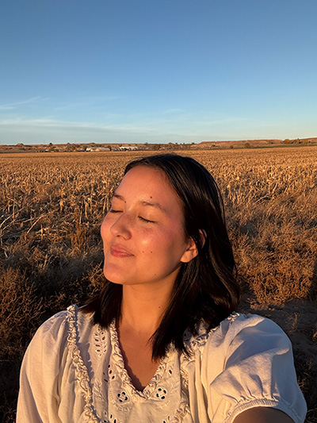

Rebecca Conklin
Lifestyle, Beauty, & Motherhood Content Creator

What is a portfolio?
A content creator portfolio is a website that showcases your work, personal style, and what you can offer as a creator.
It acts as a digital resume, highlighting your social media presence and creative abilities for brands and collaborations.
Why should you make one?
It helps brands decide if you are a good fit to work with by answering questions like:
- Does this creator fit our brand?
- Do we like their style?
- Can they create high-quality content?
How to Build a Portfolio
- Choose a platform or domain
- Showcase your best work
- Include your contact information
Many creators use platforms like Instagram and TikTok to showcase their work and build their audience.
Key Terms
- Content Creator
- A person who produces videos, photos, or posts for online platforms.
- Portfolio
- A collection of work that showcases skills and achievements.
- Collaboration
- Working with brands or other creators to produce content.
Get in Touch
Interested in working together? Contact me at Conklinrac@gmail.com or call me at +1 (385) 254-9013.